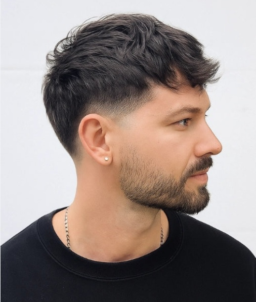

Zakola to nie wyrok. Jakie cięcie uratuje rzednące włosy?
Stoisz rano przed lustrem, przeczesujesz włosy dłonią i widzisz, że linia czoła znowu uciekła o milimetr do tyłu. Zaczynasz zaczesywać pasma na boki. Używasz więcej pomady. Walczysz z każdym podmuchem wiatru, bo wiesz, że jeden silniejszy powiew zrujnuje Twoją misterną konstrukcję.
Brzmi znajomo? Faceci tracą włosy - to biologia. Ale najgorsze co możesz zrobić to udawać, że problemu nie ma i tworzyć na głowie architektoniczne iluzje. Dobrze dobrane cięcie potrafi całkowicie zmienić proporcje twarzy i ukryć to co trzeba. Bez codziennego stresu przed lustrem.
Najgorsze błędy przy rzednących włosach
Zanim powiemy co robić, ustalmy czego kategorycznie unikać. Jeśli masz zakola lub przerzedzenia na czubku głowy, natychmiast zrezygnuj z zaczesywania włosów do tyłu (slick back) - to fryzura, która niczym szkło powiększające obnaża linię zarostu. Zbyt długie włosy na bokach też nie pomogą: gdy boki są gęste i ciemne, a góra rzadka, tworzy się kontrast, który tylko podkreśla braki. Unikaj też ciężkich, błyszczących pomad - żele sklejają włosy w grube pasma, przez które prześwituje skóra.
Textured crop - Twój nowy najlepszy przyjaciel
To obecnie najmocniejsza broń w walce z zakolami. Textured crop opiera się na krótkich, mocno wycieniowanych bokach i grzywce skierowanej do przodu. Grzywka naturalnie opada na czoło maskując linię zakoli, a mocne teksturowanie góry sprawia, że włosy układają się warstwami - wydaje się, że jest ich dwa razy więcej. Rano wystarczy dosłownie 30 sekund, żeby ogarnąć tę fryzurę.
Krótko i bez litości - Buzz cut
A co, jeśli przerzedzenia są już bardzo widoczne? Wtedy najlepszą strategią jest atak. Buzz cut, czyli cięcie maszynką na krótko, to wybór facetów pewnych siebie. Krótkie boki z płynnym fadem i minimalna długość na górze zacierają granicę między miejscami, gdzie włosy rosną gęsto, a tymi, gdzie jest ich mniej. Wyglądasz ostro, męsko i przestajesz się przejmować wiatrem.
Sekretem jest matowe wykończenie i objętość - puder do włosów lub matowa pasta nakładana w minimalnych ilościach. Zamiast kombinować z zapuszczaniem, przy najbliższej wizycie powiedz swojemu barberowi, żeby spróbował krótszego cięcia z teksturowaną górą. Różnicę zobaczysz od razu.
Zarezerwuj wizytę